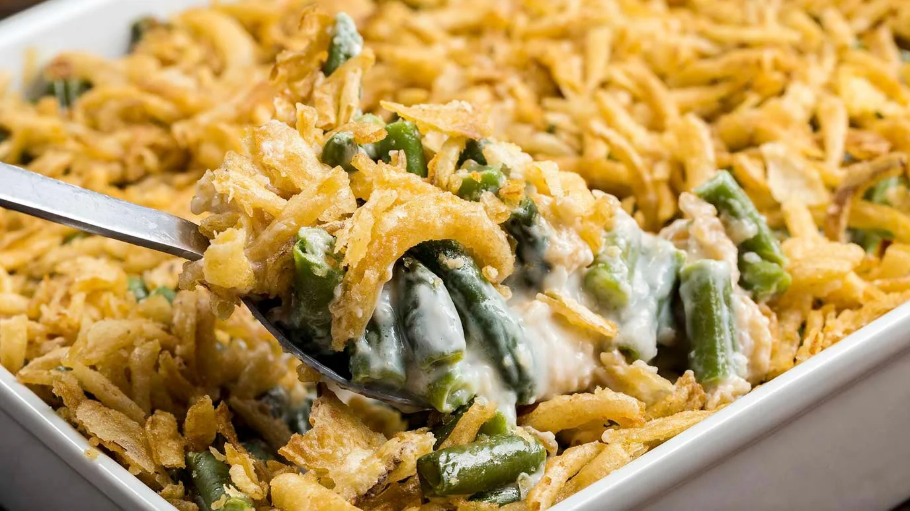

Green Bean Casserole

Description
This scrumptious dish is a fan favorite for the holiday season
The crispy crunch paired with the smooth creamy mushroom soup will leave your tastebuds paralyzed
Ingredients
- Green beans
- Canned Soup
- Cheese
- French-fried onions
- Optional ngredients
- crumbled bacon
- sauteed mushrooms/onions
- garlic
- parmesan Cheese
- black pepper
Steps
- Mix the beans and soup in a microwave-safe bowl and microwave until warm
- Stir in half the cheese. Microwave until melted and well-blended
- Transfer to a prepared baking dish. Top with fried onions and remaining cheese
- Bake in the preheated oven until the cheese is melted and the onions are brown
Return to Main Page